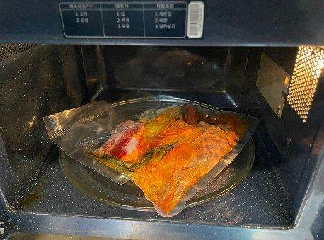
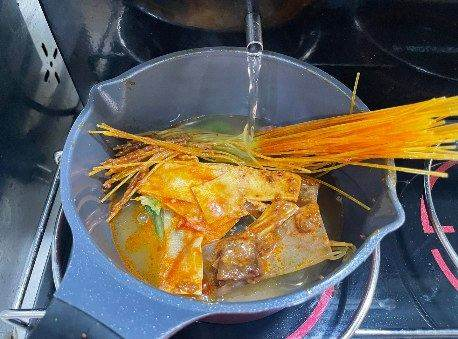
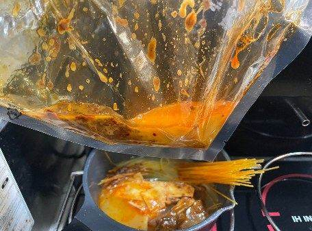
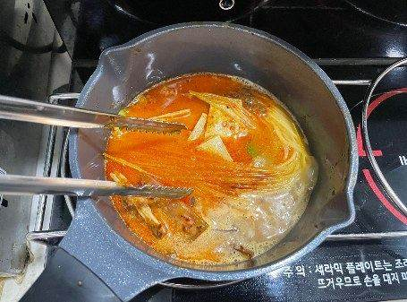
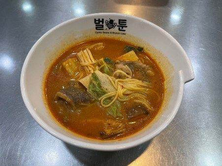
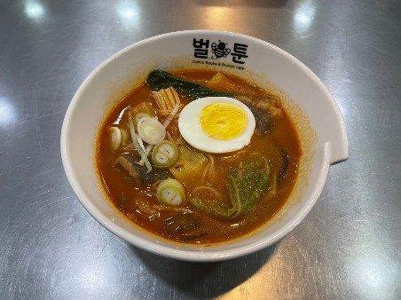
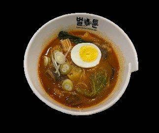

| 메뉴명 | 얼큰 마라탕(라면조리기) |
|---|
| 판매가격 | 9,900원 |
|---|
| 원재료 | 마라탕원팩, 계란, 대파, 물 |
|---|
| 사용 부자재 | 라면용기 |
|---|
| 메뉴특징 | 알싸한 맛의 한국인 취향저격 얼큰 마라탕! |
|---|
조리방법

1
냉동 마라탕 1팩을 봉지째 전자레인지에 넣어 30초간 돌린다.

2
냄비에 해동한 마라탕 1팩을 넣고 [마라탕 모드]를 누른 뒤, 조리 시작버튼 누른다.
(*마라양념 다 짜서 넣기)

3
냄비에 받아진 물 일부를 봉지에 넣고 흔들어 최대한 남은 양념을 헹궈 넣는다.

4
뭉친 재료를 풀어주며 끓인다.

5
조리가 끝나면 라면용기에 옮겨 담는다.
(*청경채, 우삼겹이 위로 올라오게 담기)

6
계란 반개, 대파슬라이스 5g을 토핑하여 완성한다.

7
단무지와 함께 세팅하여 제공한다.